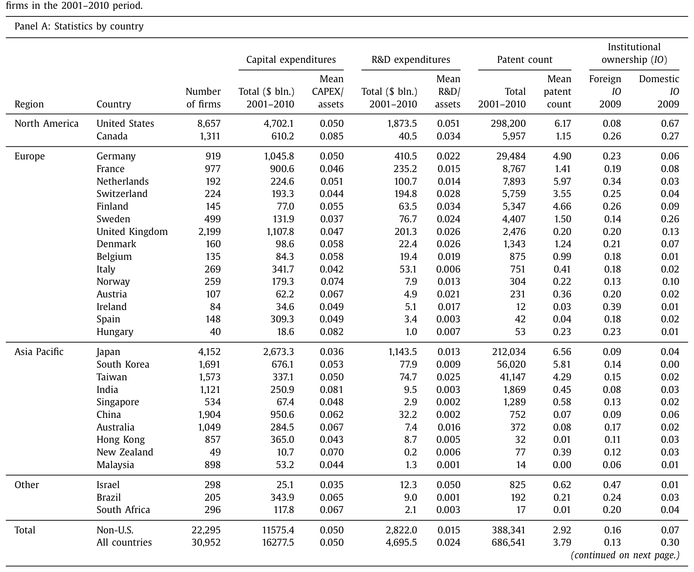
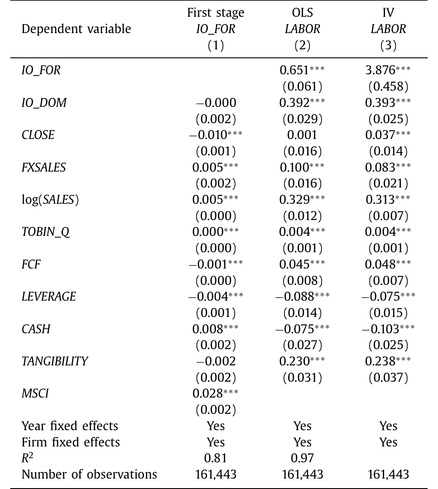
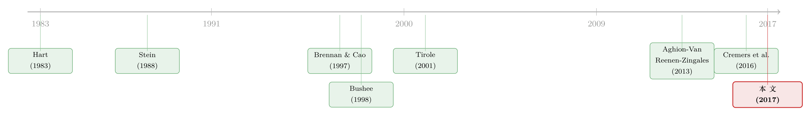

外资真是「蝗虫」吗？——一次跨 30 国的长期投资体检
本文读的是 Bena, Ferreira, Matos & Pires (2017, Journal of Financial Economics)：作者用 MSCI 指数纳入造出的外生冲击证明，外资机构持股不但没有逼公司「短视」，反而显著推高了长期投资、雇佣和创新产出——外资更像是把公司从内部人的「平静生活」里拽出来的监督者，而不是啃光资产就走的蝗虫。
1 一句被反复引用的「蝗虫」
故事得从一句政治话术讲起。
2005 年，德国社会民主党主席 Franz Müntefering 把盯上德国企业的外国私募和对冲基金，比作一群「蝗虫」（locusts）：它们「按季度衡量成功，吸干企业的实质，等把公司啃光了就让它去死」。这句话后来被反复引用，「蝗虫」也从特指激进投资者，慢慢泛化成对所有外国资本的标签（Benoit, 2007；The Economist, 2007）。
十年后，站在对立面替「长期主义」说话的，居然是华尔街自己。2015 年，全球最大的资产管理人 BlackRock 的 CEO Laurence Fink 给上市公司 CEO 们写了一封措辞严厉的公开信，抱怨「短期主义」逼着企业靠回购、加派息去讨好那些「此刻恰好持有股票的交易者」，却在创新、技能型劳动力和必要资本开支上投资不足。
你看，从柏林到纽约，主流叙事出奇地一致：全球化的、分散的、流动的股东结构，正在把公司推向短视。这套说法背后有一条清晰的因果链——外资是「热钱」（hot money），它们对本地公司的长期前景没有耐心，于是管理层被迫砍掉资本开支、砍掉研发、裁掉员工，去换一份漂亮的季度财报。
这篇论文要做的，就是把这条人人都觉得「理所当然」的因果链，拎到显微镜底下重新验一遍。
2 两个针锋相对的假说
作者把问题拆成两个互相对立的假说，全文就是在这两者之间做裁判。
假说一（蝗虫 / 短视假说）：外资机构在场，会让经理人削减长期投资。逻辑是市场压力——Ferreira et al. (2014) 提出，股市会逼着经理人去挑那些「容易跟投资者讲清楚」的项目，于是他们宁可买现成技术，也不愿做透明度低、回报又慢的创新。更狠的一层是，外资对失败的容忍度更低，一旦业绩不及预期就可能换人，于是风险厌恶的经理人被「职业忧虑」（career concerns）按住，绕开了创新这条险路。
假说二（监督 / monitoring 假说）：恰恰相反，外资机构的在场是一种纪律。它能把那些偏爱「平静生活」（quiet life，Hart, 1983；Bertrand and Mullainathan, 2003）的内部人撬动起来，去做长期投资。
这里有一个很妙的、也是全文的关键直觉：为什么偏偏是「外资」，而不是本土机构？ 作者的回答是——本土机构往往跟本地公司有千丝万缕的业务往来：它们背后的银行可能正是这家公司的债权人、承销商、顾问，甚至在董事会里有席位（Ferreira and Matos, 2012）。这种「关系」让本土机构更愿意迁就内部人，做不成一个合格的外部监督者（Gillan and Starks, 2003）。而外资机构因为没有这些羁绊，反而敢动真格——压制管理层壕沟（entrenchment），把公司推向风险更高、但增长潜力更大的项目；它们还能靠国际化的投资组合把风险分散掉，因而更扛得住长期投资那种「高风险/高回报」的折磨。
注意这里的措辞：作者强调的是 voice（用手投票、发声） 而非 exit（用脚投票、抛售砸盘）。后面的识别策略——盯住 MSCI 指数纳入——恰恰是冲着 voice 这个渠道去的，这一点请记住。
两个假说，方向完全相反。谁对谁错，归根结底是一道实证题。
3 真正关键的一步：MSCI 指数的「一脚踏入」
接着，一个自然的问题是：你怎么知道是「外资持股 → 长期投资」，而不是反过来——外资本来就专挑那些前景好、马上要爆发一波创新的公司去买？
这就是内生性（endogeneity）。如果外资是「闻着味」去的，那么外资持股高的公司投资多、创新多，根本说明不了任何因果。普通的 OLS 回归在这里是没用的，哪怕加上公司固定效应（firm fixed effects）控制掉不随时间变的异质性，也挡不住「反向因果」和「随时间变化的遗漏变量」。
但真正关键的一步，是作者找到了一个相当干净的工具变量（instrumental variable, IV）：股票被纳入 MSCI All Country World Index（MSCI ACWI）。
为什么这是个好工具？逻辑分两半：
相关性（第一阶段够强）。 国际投资组合普遍以 MSCI 指数为业绩基准（Cremers et al., 2016），所以一旦某只股票被纳入 MSCI ACWI，追踪指数的外资机构就会被动地、机械地买入它。数据给出的第一阶段结果是：纳入 MSCI ACWI 之后，外资机构持股大约上升了 3% 的市值。这个冲击跟公司当下的经营好坏关系不大，更多是「指数规则」造出来的。
排他性（exclusion restriction 站得住）。 这是全文最让人信服的一处。作者特意检验了：纳入 MSCI ACWI 之后，本土机构持股并没有显著上升。这一条至关重要——它意味着「纳入」这件事，并不是通过「关于公司未来前景的新信息」「投资者关注度上升」「资本供给变化」这些别的渠道去影响投资和创新的（否则本土机构也该一起涌入才对）。换句话说，纳入唯一拨动的那根弦，就是外资持股。这正是排他性约束需要的。
把两阶段最小二乘（two-stage least squares, 2SLS）的骨架写出来，大致是这样一副样子（\(MSCI_{i,t}\) 为纳入哑变量，\(X\) 为控制变量，\(\mu_i\)、\(\tau_t\) 为公司与年份固定效应）：
$$ ForeignIO_{i,t} = \alpha + \delta\, MSCI_{i,t} + \gamma' X_{i,t} + \mu_i + \tau_t + \varepsilon_{i,t} $$
$$ Y_{i,t+1} = \alpha + \beta\, \widehat{ForeignIO}_{i,t} + \gamma' X_{i,t} + \mu_i + \tau_t + u_{i,t} $$
第一阶段用纳入哑变量把外资持股里「外生」的那一块拟合出来（\(\widehat{ForeignIO}\)），第二阶段再看这块外生变化对一年后的产出 \(Y\) 的影响。作者还做了两道加固：把样本限制在「纳入门槛上下 10% 带宽」内的公司（思路上接近断点回归），以及围绕纳入事件直接做双重差分（difference-in-differences, DiD）。结论都一致。
（顺带一提，用指数纳入来识别「被动投资者其实在做主动治理」这件事，并非孤例——Crane, Michenaud and Weston (2016) 用 Russell 指数门槛研究了同样的逻辑，发现「管理意义上的被动」投资者，在「公司治理意义上」一点都不被动。）
4 数据：30 个国家、3 万家公司、68 万项专利
样本来自 Worldscope，2001–2010 年。作者剔除了公用事业（SIC 4900–4999）和金融业（SIC 6000–6999）这两个受管制的行业，再把范围限定在 30 个「累计至少有 10 项专利、且股票市值合计至少 100 亿美元」的国家。最终样本是 30,952 家公司、181,173 个公司–年观测。
几个值得记住的描述性事实（如表 1）：
- 长期投资用 CAPEX + R&D 度量。美国和非美国公司的 CAPEX/资产之比都在 5% 左右，差别不大；
- 但研发上差距悬殊：美国公司 R&D/资产之比高达 5.1%，远超非美国公司的 1.5%（对不报研发的公司，作者把 R&D 记为零）。有意思的是，非美国公司合计的研发支出，在样本期内超过了美国公司——创新正在全球化；
- 整个样本期，这些公司在固定资本上投了约 16.3 万亿美元、在研发上投了约 4.7 万亿美元，申请专利合计 686,541 项（专利数据来自 USPTO 的授权公告）；
- 人力与组织资本：用雇员人数的对数（
LABOR）、薪酬占销售比（STAFF_COST）、人均薪酬（AV_STAFF_COST）来刻画人力资本，用 SG&A/销售刻画组织资本（Eisfeldt and Papanikolau, 2013）。

Table 1
5 主要结果：蝗虫的「罪名」，一条条被推翻
然后，把第二阶段的系数摆出来。作者的核心发现可以浓缩成一句话——外资持股每外生地上升 3%，会带来：
- 长期投资（占资产比）上升约 0.3%；
- 雇佣上升约 12%；
- 创新产出（专利数）上升约 11%。
请注意这三个数字一起出现的意味。蝗虫假说预言的是：投资被砍、研发被砍、员工被裁。而数据给出的，是三者同时上升。尤其是「雇佣上升 12%」这一条，直接戳穿了「外资必然带来裁员、把生产搬走、推行敌视劳工的政策」这个最具情绪性的指控。表征人力资本的几个指标也一致地变好（如表 4）。

Table 4: reports the results for human capital as proxied
但一个细心的读者马上会反问：投资和雇佣一起涨，钱从哪来？会不会只是因为纳入指数后资本供给变松、公司能更便宜地融到外部资金，于是「有钱任性」地乱花？
这正是作者用财务政策检验来堵的一个口子。围绕纳入事件做 DiD，他们发现：长期投资上升带来的资金缺口，是靠动用现金存量和新增债务发行补上的；与此同时，公司发行了更少的股权、用了更少的外部融资、更多依赖内部融资。这一组合恰好符合资本结构的优序融资理论（pecking order theory）。更重要的是，它反驳了「投资上升只是资本供给放松的副产品」这个替代解释——如果是供给驱动，你该看到公司趁机大举融资才对，而不是反而减少外部融资。
6 这究竟是不是「监督」？四道旁证
到这里，「外资 → 长期投资上升」的因果已经立住了。但作者没有就此打住，而是继续追问机制：这个正向效应，真的来自「监督」吗？ 于是反转之后还有反转——作者用四道横截面检验，把监督假说一步步坐实。
第一，投资期限。 用投资者的组合换手率来度量投资期限（Gaspar et al., 2005；Harford et al., 2015），长期外资持股与产出变量的正相关，明显强于短期外资持股。逻辑很顺：长期投资者才有动力去监督。
第二，来源国的「法律基因」。 来自普通法（common law）国家的外资持股，与产出变量呈显著正相关。这与「普通法国家的机构在向外输出好的治理实践」的故事一致——它们把母国的治理文化「出口」到了被投公司（呼应 La Porta et al., 1998 的「法与金融」传统）。
第三，越是「治理薄弱」的地方，外资越有用。 当公司层面治理更弱、国家层面投资者保护更差时，外资持股的正效应更强。
第四，竞争。 当产品市场竞争不激烈（即经理人更容易壕沟自保）时，外资持股与创新产出的正相关更强。
这四道检验指向同一个故事：当董事会、接管威胁、破产压力这些常规治理机制失灵的时候，外资机构补上了那个「外部监督者」的空缺。 哪里最需要监督，哪里的外资效应就最大。
最后还有一记回马枪。投资和创新一起涨，会不会其实是「帝国建造」式的过度投资（overinvestment / empire building，Jensen, 1986）？毕竟，多花钱本身不等于花对钱。（关于自由现金流与过度投资的经典论述，可参见《现金为什么一定要「还」出去？——四十年后，重读 Jensen 的自由现金流》。）作者用一组绩效指标作答：外资持股与全要素生产率（TFP）、海外销售、股东价值都正相关。也就是说，这些投资是有效率的，不是在烧钱。蝗虫的最后一条罪名，也被摘掉了。
7 文献脉络
把这篇论文放进它所在的那条线里，会看得更清楚。
最早的源头，是关于「股市会不会逼公司短视」的理论。Stein (1988, 1989) 用模型刻画了非理性市场里经理人的短视行为——接管威胁与信息不完全，如何诱使经理人牺牲长期价值。与此对立的一支，是「外资即热钱」的判断：Brennan and Cao (1997) 指出，对本地股票了解较少的外国投资者，可能不成比例地再平衡组合、放大对坏消息的反应；Borensztein and Gelos (2003) 也发现国际资本流在新兴市场更「易于恐慌」。

另一支文献则给「机构监督」撑腰。Bushee (1998) 发现机构持股更高的公司，更不容易为了挽回盈利下滑而砍研发；Tirole (2001) 系统梳理了公司治理的框架，点明了利益相关者资本主义与股东资本主义之争；Aghion, Van Reenen and Zingales (2013) 论证机构持股通过缓解经理人职业忧虑来促进创新；Harford, Kecskes and Mansi (2015) 则显示长期机构投资者会监督经理人、抑制过度投资。指数纳入作为识别工具的用法，由 Cremers et al. (2016) 关于指数化与主动管理的国际证据打下基础。
本文站在这条线的交汇点上：它把「外资」这一身份与「监督」这一机制绑在一起，用 MSCI 纳入提供的外生变化，在 30 国的大样本上给出了因果证据。它也与同期的 Luong et al. (2017) 形成对照——后者同样发现外资机构促进创新，但没有进一步探讨对长期投资与雇佣的含义。与美国情境下 Aghion et al. (2013) 强调的「职业忧虑」渠道不同，本文认为在国际情境里，真正被外资压制的，是壕沟里的其他内部人（如控股股东），而非经理人的职业忧虑——因为在美国之外，这类内部人的影响往往更大。
8 评论与延伸（Q&A + 研究方向）
(a) 几个可能的疑问
Q：蝗虫假说和监督假说，到底差在哪一个动作上？
差在「外资用什么方式影响公司」。蝗虫假说走的是退出/砸盘（exit）和市场压力——外资没耐心、用脚投票，逼经理人交季度成绩。监督假说走的是发声（voice）——投票、施压、甚至代理权之争，把内部人推向长期项目。本文的识别（MSCI 纳入带来被动的、长期的持股增加）天然偏向 voice 这条渠道，这也是为什么它能检出正效应。
Q：用 MSCI 纳入做工具变量，凭什么算「外生」？纳入难道不正是因为公司变大变好了吗？
关键不在「纳入是否随机」，而在「纳入是否只通过外资持股这一条路影响结果」。作者的杀手锏是那个安慰剂式检验：纳入后本土机构持股没有显著上升。如果纳入是因为公司基本面变好、或带来了新信息/关注度，本土机构理应一起涌入；事实并非如此，说明纳入拨动的几乎只有外资持股这一根弦，排他性约束因而站得住。再加上 10% 带宽样本和 DiD，稳健性是够的。
Q：投资、雇佣、创新一起上升，会不会就是「帝国建造」？
这是最该担心的替代解释。作者的回应是看效率而非规模：外资持股与 TFP、海外销售、股东价值都正相关。多投的钱换来了更高的生产率和价值，而不是单纯把摊子铺大——这与过度投资的预测相反。
Q：为什么是「外资」机构起作用，本土机构反而不行？
因为本土机构常和被投公司有业务捆绑（债权、承销、顾问、董事席位），更容易迁就内部人；外资没有这些羁绊，敢真刀真枪地压制壕沟。这也解释了为什么纳入后本土持股不动、而效应全部来自外资。
Q：本文结论和美国文献为何不一样？
在美国，Aghion et al. (2013) 把机构促进创新归因于缓解经理人的职业忧虑。本文认为，在美国之外的情境里，机构持股占比没那么高，而其他内部人（如控股股东、家族）的影响更大，外资真正约束的是这些人。机制的主角换了，但「监督促进创新」的大方向一致。
Q：0.3% 的长期投资增幅，是不是太小、没什么经济意义？
单看投资占资产 0.3% 确实不大，但它是相对一个温和的 3% 外资持股冲击而言的；同一冲击对应的是 12% 的雇佣增长和 11% 的创新产出增长，后两者的量级相当可观。把三者放在一起，足以推翻「砍投资、砍研发、裁员」的蝗虫叙事。
(b) 几个可能的研究问题与提案
1. 外资机构持股与公司债流动性 / 信用利差。 【经济故事】本文证明外资股东能改善治理、压制壕沟、提升 TFP 与股东价值。那么债权人会不会也分到红利？更好的治理意味着更低的违约风险与代理成本，理论上应反映为更窄的信用利差和更高的二级市场流动性。 【可行性】中。可把 MSCI 股票纳入作为外资股权持有的工具变量，外推到同一发行人的债券，用 TRACE（或国际版 bond 数据）度量利差与流动性。难点是公司债与股票样本的国际匹配，以及把「股东治理」效应与「债权人自身」效应分开。这恰好接续我正在做的「外资公司债投资人与流动性」方向。
2. 把识别搬到债券指数纳入上。 【经济故事】既然 MSCI 股票指数纳入能造出外生的外资股权冲击，那么 Bloomberg Barclays Global Aggregate 等债券指数的纳入，是否同样能造出外生的外资债权冲击？外资债权人会不会也通过契约条款、再融资定价施加纪律？ 【可行性】中高。债券指数纳入规则（评级、规模、剩余期限门槛）清晰、可断点化；中国国债/政金债被纳入全球指数就是现成的实验场（Noble and Bullock, 2015 提到的「纳入悬而未决」即其前奏）。识别相对干净，数据可得。
3. 危机期间外资是「忠诚」还是「逃跑」？ 【经济故事】蝗虫叙事的另一半是「热钱在坏天气里先跑」。把本文的长期外资 vs 短期外资二分，放到流动性危机窗口，看哪一类外资在抛售、哪一类在逆向接盘。 【可行性】中。需要高频持仓数据与危机事件（如 2008、2020）。可与公司债火线甩卖文献对接（参见《同一个发行人的两只债券，戳破了「火线甩卖」的幻觉》）。
4. 雇佣增长的「质」与「地理」。
【经济故事】本文证明外资带来雇佣总量上升，但没细究结构——涨的是高技能岗还是低技能岗？是在本国还是被搬到海外？AV_STAFF_COST 已经给了切口。
【可行性】中。需要更细的雇员构成或行政数据，国际样本下覆盖不全是主要障碍。可与《上市之后，公司为什么开始疯狂招人？》对照，看「资本市场准入」与「外资监督」两条线如何叠加。
9 我的判断
这篇论文最漂亮的地方，是它把一个情绪化、被政治话术绑架的命题（外资=蝗虫），翻译成了一个可识别、可证伪的因果问题，并用一个相当克制的工具变量给出了反方向的答案。尤其是「纳入后本土持股不动」这一招，几乎是为排他性约束量身定做的安慰剂检验——它把「信息、关注度、资本供给」这些常见的污染渠道一次性堵上，是全文最值得学习的识别手艺。
要说担忧，主要有三点。其一，MSCI ACWI 纳入的是各国最大、约占自由流通市值 85% 的公司，因此本文的「外资监督」效应，严格说只在大公司上被识别出来——它对中小公司是否成立，是外推时要打的折扣。其二，工具变量识别的是局部平均处理效应（LATE），即「因纳入而被动增持的那部分外资」的效应；那些主动选股、积极发声的外资是否同样温和，这个设计回答不了。其三，monitoring 的机制虽有四道横截面旁证支撑，但终究是间接的——我们看到的是「治理弱、竞争少、普通法来源」时效应更强，却没有直接观测到投票、提案、董事更替这些 voice 动作。
往后我最想看到的，是把这条「外资监督」的逻辑搬到信用市场：股东被监督得更好，债权人是否也跟着受益？利差会不会变窄、流动性会不会变好？如果答案是肯定的，那么「蝗虫」这顶帽子，就该被彻底摘下来，换成「全球公司治理的搬运工」了。
参考文献
Bena, J., Ferreira, M. A., Matos, P., & Pires, P. (2017). Are foreign investors locusts? The long-term effects of foreign institutional ownership. Journal of Financial Economics 126(1), 122–146.
Borensztein, E., & Gelos, G. (2003). A panic-prone pack? The behavior of emerging market mutual funds. IMF Economic Review 50, 43–63.
Brav, A., Jiang, W., Ma, S., & Tian, X. (2017). How does hedge fund activism reshape corporate innovation? Journal of Financial Economics (Forthcoming).
Brennan, M., & Cao, H. (1997). International portfolio investment flows. Journal of Finance 52, 1851–1880.
Bushee, B. (1998). The influence of institutional investors on myopic R&D investment behavior. Accounting Review 73, 305–333.
Crane, A., Michenaud, S., & Weston, J. (2016). The effect of institutional ownership on payout policy: evidence from index thresholds. Review of Financial Studies 29, 1377–1408.
Cremers, M., Ferreira, M., Matos, P., & Starks, L. (2016). Indexing and active fund management: international evidence. Journal of Financial Economics 120, 539–560.
Eisfeldt, A., & Papanikolau, D. (2013). Organization capital and the cross-section of expected returns. Journal of Finance 68, 1365–1406.
Harford, J., Kecskes, A., & Mansi, S. (2015). Do long-term investors improve corporate decision making? University of Washington, working paper.
Hart, O. (1983). The market mechanism as an incentive scheme. Bell Journal of Economics 14, 366–382.
Jensen, M. (1986). Agency costs of free cash flow, corporate finance and takeovers. American Economic Review 76, 323–329.
La Porta, R., Lopez-de-Silanes, F., Shleifer, A., & Vishny, R. (1998). Law and finance. Journal of Political Economy 106, 1113–1155.
Luong, L., Moshirian, F., Nguyen, L., Tian, X., & Zhang, B. (2017). How do foreign institutional investors enhance firm innovation? Journal of Financial and Quantitative Analysis (Forthcoming).
Stein, J. (1988). Takeover threats and managerial myopia. Journal of Political Economy 96, 61–80.
Stein, J. (1989). Inefficient capital markets, inefficient firms: a model of myopic corporate behavior. Quarterly Journal of Economics 104, 655–669.
Tirole, J. (2001). Corporate governance. Econometrica 69, 1–35.